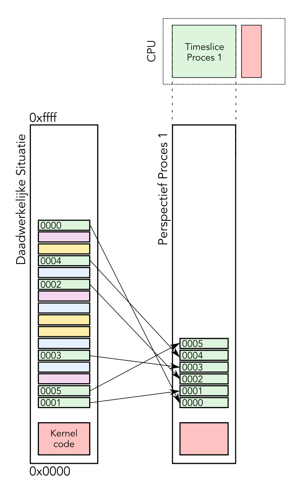
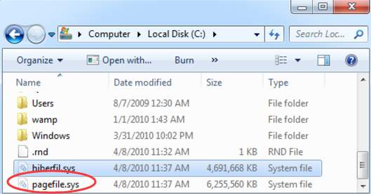
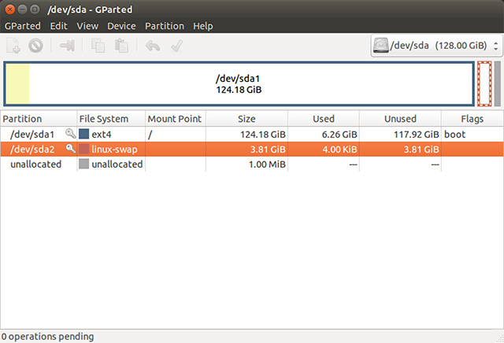
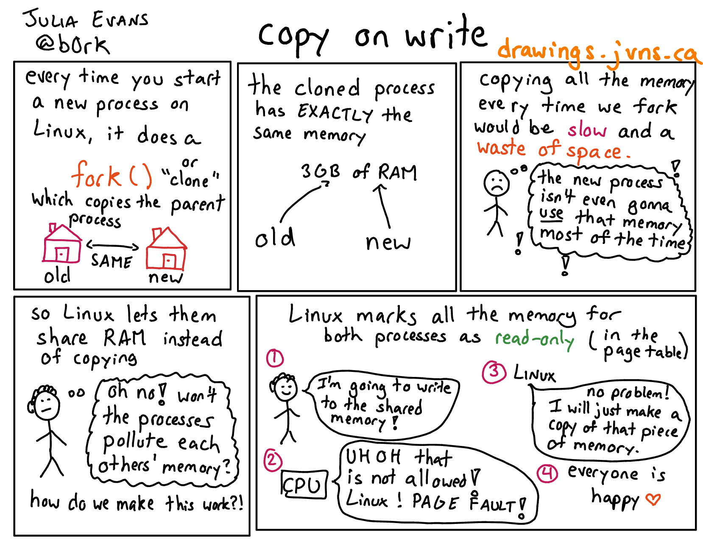
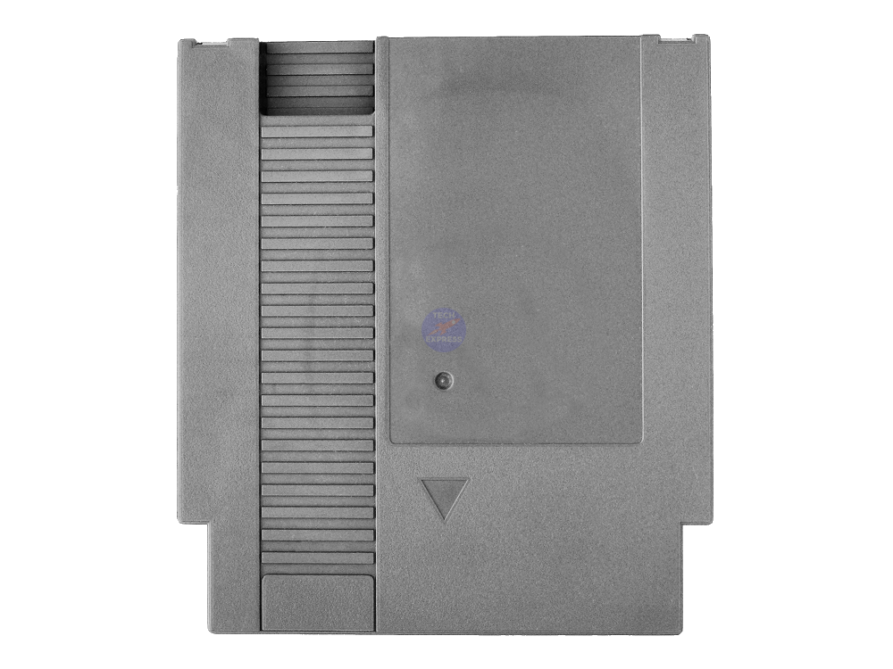

Memory Management
Embedded & Operating Systems 4
Inhoud
- Geheugen
- Geheugen delen
- Data-opslag
Terugblik
Wat is geheugen?
- Registers
- Cache
- RAM
- HD / SSD
Registers

Cache
Memory
| Index | Data |
0x00 |
01011101 |
0x01 |
10100110 |
0x02 |
10000101 |
0x03 |
11100110 |
Cache Memory
| Index | Tag | Data |
0x00 |
0x02 |
10000101 |
0x01 |
0x00 |
01011101 |
Cache
- Cache Hit / Miss
- Hit Ratio
\[ratio = \frac{hit}{hit + miss} \times 100\%\]

RAM Geheugen
- Adresruimte (64 bits)
- Bits per adres (meestal 1 byte)
- Totaal adresseerbaar geheugen
- Alles heeft een adres
- Maar wat als we meerdere processen hebben?
Inhoud
- Geheugen
- Geheugen delen
- Data-opslag
Segmentation en de MMU
Paging

Physical en Virtual Memory


Forks en de SysCall Table

Inhoud
- Geheugen
- Geheugen delen
- Data-opslag
Non-volatile Storage
- Harde Schijf
- SSD
- USB Stick, CD-ROM, Floppy, …
ROM Geheugen

- Read Only Memory (ROM)
- Programmable ROM (PROM)
- Erasable PROM (EPROM)
- Electronic EPROM (EEPROM)
- Flash
Wat hebben we deze les geleerd?
- Registers
- Cache
- Segmenation en Pagination
- Virtual Memory
- Copy-on-Write
- Non-volatile geheugen
- ROM